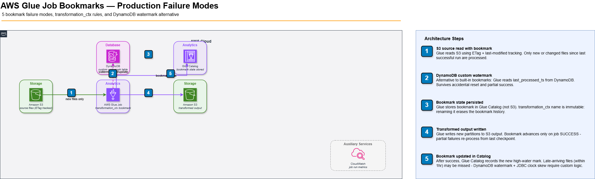

Glue Job Bookmarks: Why They Break and How to Fix Them
The Glue job that silently dropped 2 million records for 9 days
A daily Glue ETL job had been processing S3 files incrementally for three months using job bookmarks. On day 94, a partner system began writing files with a modified timestamp format in the key name. Bookmarks track S3 object ETags and modification timestamps — the new key format caused Glue to treat those files as already-processed. For 9 days, 220,000 records/day went unprocessed. The bookmark state showed no errors. The job completed successfully every morning. The missing data was only discovered when a downstream report showed an unexpected trend break.
How Glue bookmarks actually track state
AWS Glue job bookmarks track which data has already been processed so incremental runs only process new data. For S3 sources, bookmarks track by S3 object modification timestamp and ETag — not by file name, not by partition path. For JDBC sources, bookmarks track by a numeric or date column you specify (jobBookmarkKeys). These are fundamentally different tracking mechanisms with completely different failure modes.
Bookmark state is stored in an S3 bucket managed by AWS Glue (not in your account). It is tied to the job name and run ID. Renaming a Glue job resets the bookmark entirely — the new job has no history. This has caused multiple production incidents where job renames during "minor refactoring" led to full-table reprocessing.
S3 bookmark: how it selects files
import sys
from awsglue.utils import getResolvedOptions
from awsglue.context import GlueContext
from pyspark.context import SparkContext
args = getResolvedOptions(sys.argv, ['JOB_NAME'])
sc = SparkContext()
glueContext = GlueContext(sc)
job = glueContext.create_job_bookmark_operator(args['JOB_NAME'])
# Bookmark-enabled S3 read — Glue automatically filters to new/modified files
datasource = glueContext.create_dynamic_frame.from_options(
connection_type="s3",
connection_options={
"paths": ["s3://your-bucket/events/"],
"recurse": True,
# Bookmark uses: file modification time + ETag
# Does NOT filter by partition name or key prefix pattern
},
format="json",
transformation_ctx="datasource" # REQUIRED: this key ties state to this step
)
print(f"Bookmark returned {datasource.count()} records this run")The transformation_ctx parameter is mandatory for bookmark tracking. Without it, Glue reads all files every run. With a wrong ctx value (e.g., you renamed the step), the bookmark is reset for that step. Treat transformation_ctx values as immutable identifiers — never rename them after a job goes to production.
The 5 ways bookmarks silently fail
1. Late-arriving files
S3 files written after the bookmark snapshot point are caught by the next run. But files that have an old modification timestamp (backfills, replays, vendor-delayed deliveries) will be missed entirely — their timestamp predates the bookmark cursor. Bookmarks have no mechanism for late arrivals. The fix: for sources with potential late arrivals, implement a custom watermark using a DynamoDB table storing the last processed file key, not the bookmark mechanism.
2. File re-writes with the same key
If a source system overwrites an S3 file with the same key, the ETag changes but the key stays the same. The bookmark tracks ETags, so the new file is processed. But if the overwrite happens within the same Glue run's bookmark window, it may be missed. This affected us when a vendor corrected a daily summary file — the correction landed while the bookmark cursor was in a boundary position.
3. JDBC bookmark column gaps
# JDBC bookmark configuration — requires explicit bookmark key
datasource = glueContext.create_dynamic_frame.from_catalog(
database="production",
table_name="orders",
additional_options={
"jobBookmarkKeys": ["updated_at"], # must be monotonically increasing
"jobBookmarkKeysSortOrder": "asc",
# Gotcha: if updated_at is nullable, NULL rows are ALWAYS reprocessed
# Gotcha: if clock skew exists between app and DB, rows can be missed
},
transformation_ctx="orders_source"
)JDBC bookmark keys must be monotonically increasing. If your source table uses an updated_at timestamp and the application server has clock skew, rows written with a slightly past timestamp will be missed. The bookmark advances past them before they arrive. Always add a 1-2 hour overlap buffer in your JDBC query and deduplicate downstream.
4. Bookmark state after failed runs
When a Glue job fails, the bookmark state is NOT advanced — the next run reprocesses the same files. This is intentional and usually correct. The problem is when a job partially succeeds: Glue commits the bookmark when job.commit() is called at the end. If your job writes 9 of 10 partitions and then fails, the bookmark was never committed — all 10 partitions are reprocessed on the next run. You need idempotent writes to handle this safely.
5. Resetting bookmarks accidentally
The AWS CLI command to reset a bookmark is: aws glue reset-job-bookmark --job-name my-job. This has been run accidentally by engineers debugging jobs in the wrong environment. After a reset, the next run processes all data from the beginning — potentially petabytes of S3 files. Protect production bookmarks with IAM denying glue:ResetJobBookmark for non-admin roles.
Architecture: incremental ingestion with Glue bookmarks
// Glue incremental ETL — bookmark state management

INTERACTIVE DIAGRAM â zoom & pan
The alternative: custom watermark with DynamoDB
For pipelines where Glue bookmarks are too unreliable, implement a custom watermark. Store the last-processed S3 key or timestamp in DynamoDB. Query new files explicitly using S3 LIST with prefix filtering. Commit the new watermark after successful write. This costs 3 DynamoDB operations per run ($0.00000025 each) and gives you complete control over the incremental logic.
import boto3
from datetime import datetime, timezone
ddb = boto3.resource('dynamodb')
table = ddb.Table('glue-job-watermarks')
def get_watermark(job_name: str) -> str:
response = table.get_item(Key={'job_name': job_name})
return response.get('Item', {}).get('last_processed_ts', '1970-01-01T00:00:00Z')
def update_watermark(job_name: str, timestamp: str):
table.put_item(Item={
'job_name': job_name,
'last_processed_ts': timestamp,
'updated_at': datetime.now(timezone.utc).isoformat()
})
# In your Glue job:
watermark = get_watermark('events-ingestion')
s3 = boto3.client('s3')
# List only files newer than watermark
new_files = [
obj['Key'] for obj in
s3.list_objects_v2(Bucket='events-bucket', Prefix='raw/')['Contents']
if obj['LastModified'].isoformat() > watermark
]
# Process new_files with Spark...
# After successful write:
update_watermark('events-ingestion', datetime.now(timezone.utc).isoformat())